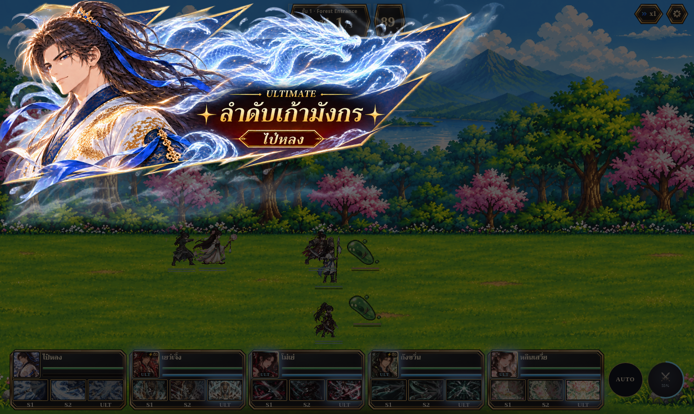
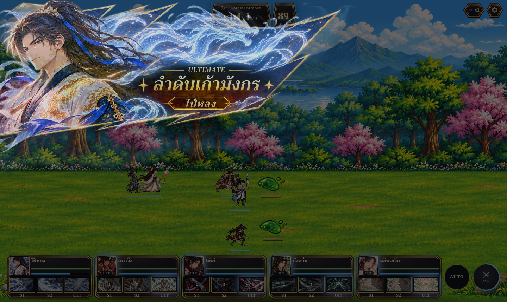
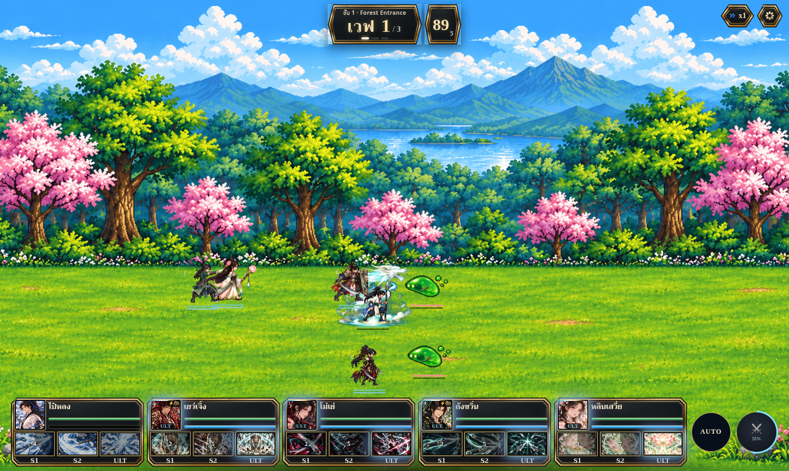
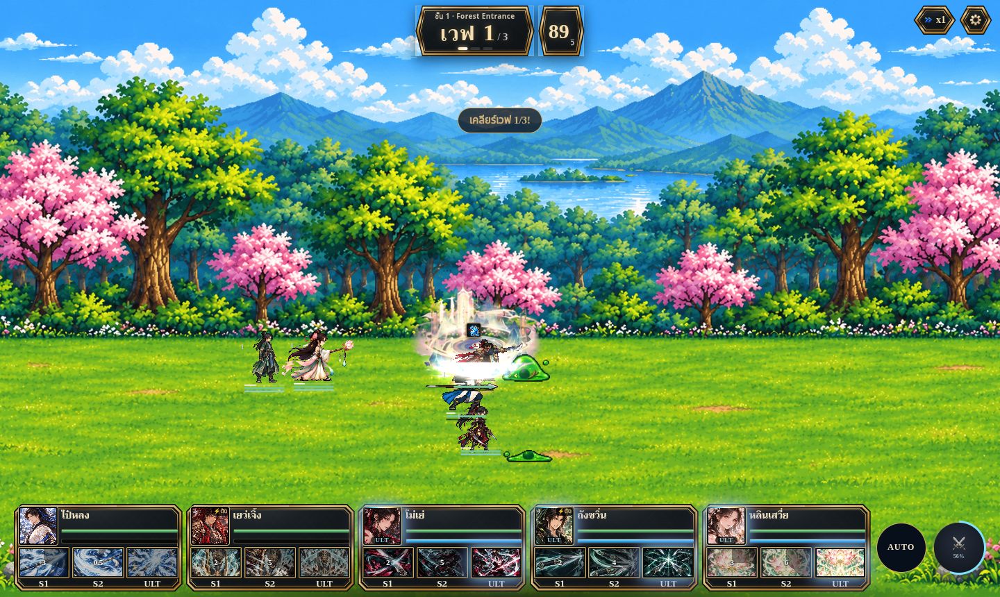

Ultimate ทีละตัว — เกมจริง
Desktop1440×860 · หลังคัตอิน ตัวผู้ใช้ Ultimate และเอฟเฟกต์ใหม่เล่นต่อ ส่วนตัวอื่นกับเวลาในด่านหยุดรอ ปลดล็อกตัวถัดไปเมื่อท่าจบ งานนี้เปลี่ยนพฤติกรรมการเล่น ไม่เปลี่ยนอาร์ตหรือ layout

อ้างอิง: คัตอินเดิมที่ล็อกแบบไว้ อาร์ตและตำแหน่งยังเดิม
เกมจริง: คัตอินเดิมช่วง fade ใน flow ที่ล็อก Ultimate ทีละตัวPixi: อัลติเล่นต่อหลังคัตอิน
DOM fallback: ใช้กติกาหยุดรอเดียวกัน
คลิปเกมจริง: ไป๋หลงจบท่า แล้วกดเยว่เจิ้งต่อ

กลับมาต่อสู้ตามปกติรายงานตรวจ frame/ตำแหน่ง/เวลาแยกจากภาพนิ่ง ไม่อ้างภาพนิ่งแทนหลักฐานด้านเวลา ไม่มีการ merge master หรือ deploy